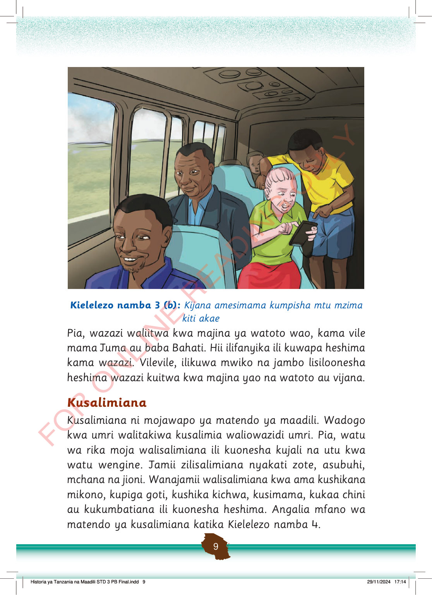

Kijana amesimama ndani ya basi ili kumpisha mtu mzima kiti. Watu wengine wamekaa na wanaonekana kusafiri pamoja.
Kielelezo namba 3 (b): Kijana amesimama kumpisha mtu mzima kiti akae
Pia, wazazi waliitwa kwa majina ya watoto wao, kama vile mama Juma au baba Bahati.
Hii ilifanyika ili kuwapa heshima kama wazazi.
Vilevile, ilikuwa mwiko na jambo lisiloonesha heshima wazazi kuitwa kwa majina yao na watoto au vijana.
Kusalimiana
Kusalimiana ni mojawapo ya matendo ya maadili.
Wadogo kwa umri walitakiwa kusalimia waliowazidi umri.
Pia, watu wa rika moja walisalimiana ili kuonesha kujali na utu kwa watu wengine.
Jamii zilisalimiana nyakati zote, asubuhi, mchana na jioni.
Wanajamii walisalimiana kwa ama kushikana mikono, kupiga goti, kushika kichwa, kusimama, kukaa chini au kukumbatiana ili kuonesha heshima.
Angalia mfano wa matendo ya kusalimiana katika Kielelezo namba 4.